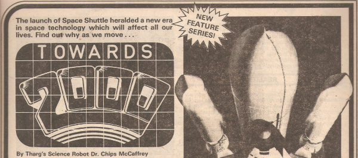

An article series mostly about the Space Shuttle program.
| Title | Parts | Pages | w indicates a wraparound coverCovers | Year(s) | Issues | Writer | Artist | Colourist | Letterer |
|---|---|---|---|---|---|---|---|---|---|
No supertitle.Shuttles Cocked and Ready to Fire | 1 | 2 | 0 | 1981 | SFS4 | editorial | NASA images | <-- | n/a |
| Towards 2000 | 3 | 6 | 0 | 1981 | 229-231 | [Dr. Chips McCaffrey] | NASA images | <-- 1pp, [b&w] | n/a |
| Space Wars | 3 | 9 | 0 | 1981 | 236-238 | [Dr. Chips McCaffrey] | NASA images | [b&w] | n/a |
No supertitle.Shuttle: Photo-Special | 1 | 0.5 | 0 | 1981 | 239 | [Dr. Chips McCaffrey] | NASA images | [b&w] | n/a |
Multi‑part diagram.Laser Lift-Off! | 2 | 2 | 0 | 1982 | 247-248 | [Dr. Chips McCaffrey] | Bill Le Fever | <-- | n/a |
No supertitle.Space Shuttle: The Future | 1 | 2 | 0 | 1982 | SFS5 | unknown | unknown | unknown | n/a |
Supertitled: "Beyond 2000".Inside-Out World: Living in the Future | 1 | 6 | 0 | 1982 | 2KA'83 | editorial | library images | [b&w] | n/a |
No supertitle.Space Watch | 1 | 0.5 | 0 | 1983 | 308 | [Dr. Chips McCaffrey] | NASA images | [b&w] | n/a |
| year | episodes | pages |
| 1977 | 0 | 0 |
| 1978 | 0 | 0 |
| 1979 | 0 | 0 |
| 1980 | 0 | 0 |
| 1981 | 8 | 17.5 |
| 1982 | 4 | 10 |
| 1983 | 1 | 0.5 |
| 1984 | 0 | 0 |
| 1985 | 0 | 0 |
| 1986 | 0 | 0 |
| 1987 | 0 | 0 |
| 1988 | 0 | 0 |
| 1989 | 0 | 0 |
| 1990 | 0 | 0 |
| 1991 | 0 | 0 |
| 1992 | 0 | 0 |
| 1993 | 0 | 0 |
| 1994 | 0 | 0 |
| 1995 | 0 | 0 |
| 1996 | 0 | 0 |
| 1997 | 0 | 0 |